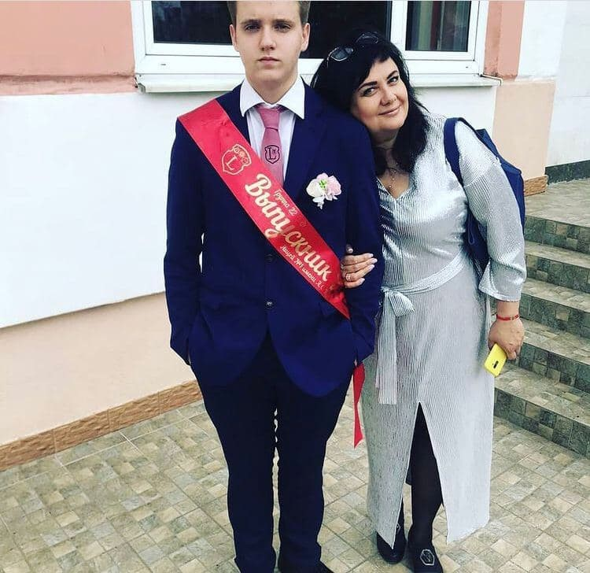

У 2009 році я пішов в школу . З 1-4 клас я навчався в школі №25, потім я навчався в школі № 28 в (кадетском класе)
з 5-9 класс.
Після 28 школи в якій я знайшов своїх 3 кращих друзів ,я поступив в Ліцей імені А .С.Пушкіна.
В цьому навчальному закладі я також знайшов друзів і приймав свою участь в житті ліцею.
